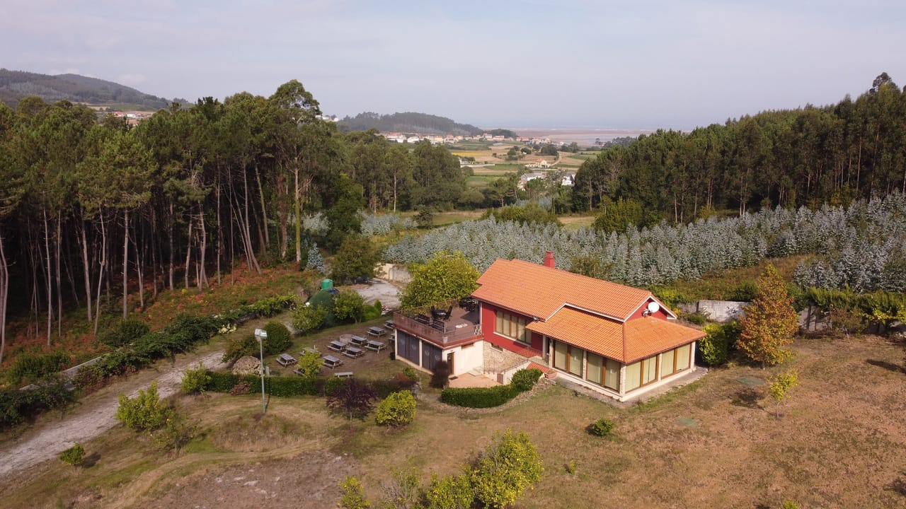
La finca para tu fiesta
Casa con barra, comedor, cocina industrial, merendero, terraza y campo de fútbol. Se alquila entera.
Los espacios en el plano de la finca
La finca vista desde arriba, con sus zonas marcadas. Toca una zona, o elige una de la lista, y mira qué se hace ahí.
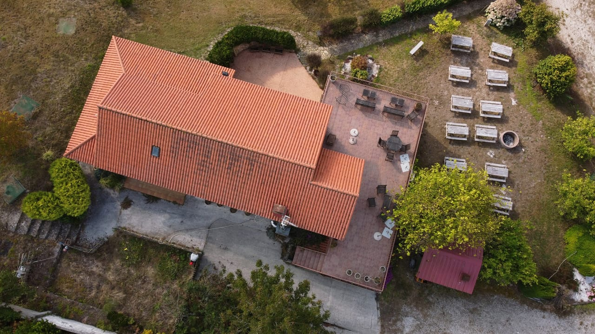
Línea continua: lo que se ve en la foto.
Línea discontinua: los espacios de dentro, colocados a ojo, por confirmar con el dueño.
Los recuadros del borde señalan lo que queda fuera de la foto. Foto del dron, septiembre de 2021.
-
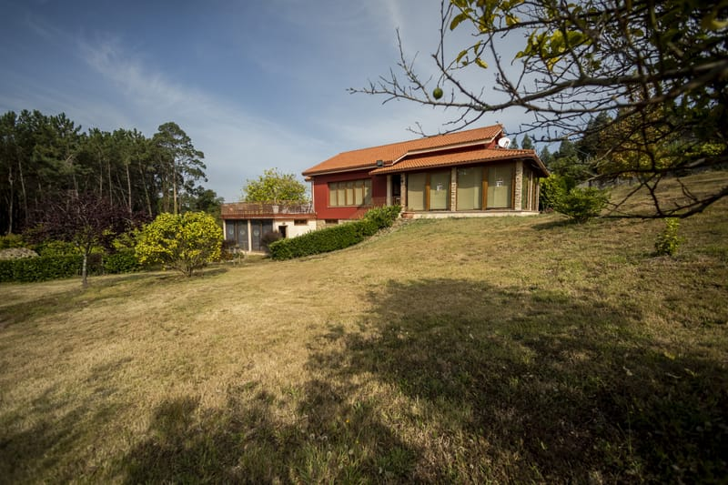
La casa y el tejado
La casa es granate, con tejado de teja naranja y zócalo de piedra, en una ladera de prado y frutales. Desde arriba solo se ve el tejado; lo que hay debajo está en las zonas de dentro.
Aforo: [aforo]
-
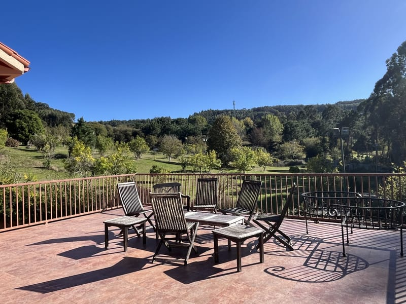
La terraza
Una terraza elevada, de baldosa, con barandilla por todo el borde y vistas al valle. Hay sillas de madera, bancos y mesas, y da al lado del merendero.
Aforo: [aforo]
-
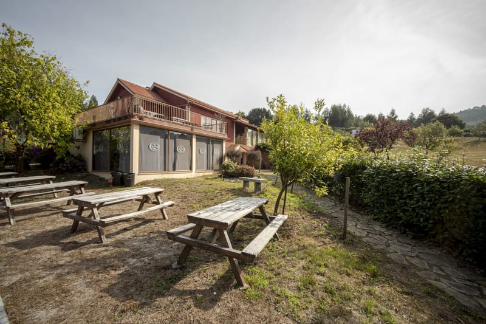
El merendero y el círculo de fuego
Mesas de picnic de madera sobre la hierba, junto a la casa, con un círculo de fuego en el suelo. Al lado hay un salón de cristal que se abre a este prado.
Aforo: [aforo]
-
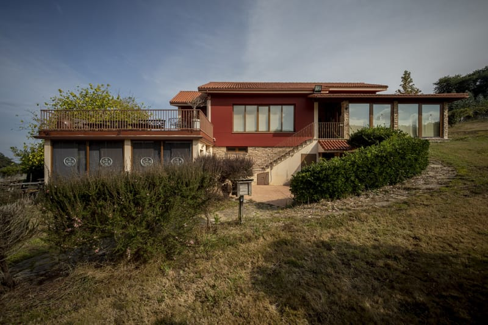
La entrada y el patio
Delante de la casa hay un suelo de hormigón y, al pie de la escalera que sube al porche, un patio pequeño de losa con un seto al lado.
Aforo: [aforo]
Por dónde se entra y dónde se aparca: [por confirmar].
-
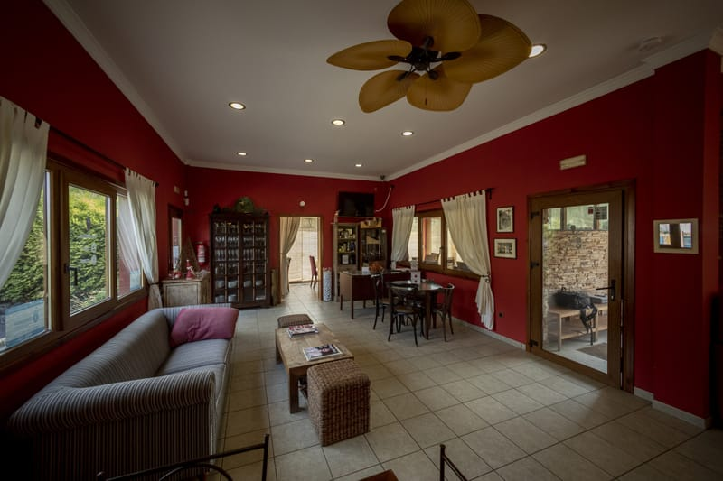
El salón y la barra
El salón principal, de paredes rojas, con ventilador de techo, sofá y vitrinas, y la barra, con pared verde, focos colgantes y botellero. Era la cafetería.
Aforo: [aforo]
Las fotos amuebladas son de septiembre de 2021. Hoy el salón está vacío. Esta zona está colocada a ojo en el plano, por confirmar con el dueño.
-
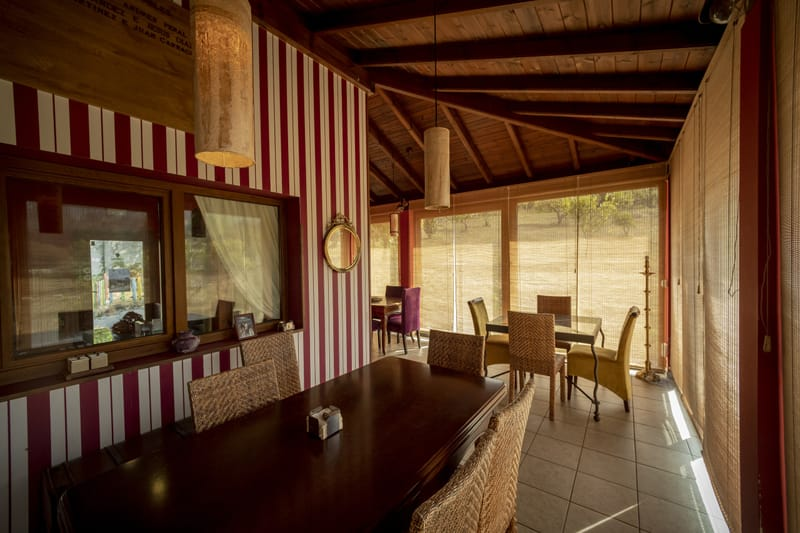
La galería de las rayas
Una galería acristalada con techo de madera, estores de bambú y una pared de rayas rojas y blancas. Tiene mesas con vistas a la finca.
Aforo: [aforo]
Las fotos son de septiembre de 2021. Esta zona está colocada a ojo en el plano, por confirmar con el dueño.
-
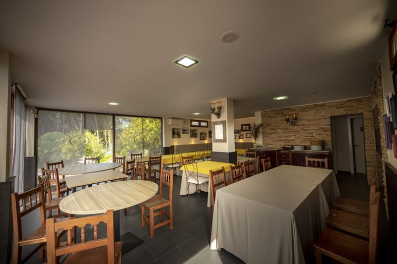
El comedor y la cocina
Un comedor grande con muchas mesas, para sentarse todos juntos, y una cocina industrial con fogones, plancha, mesas de acero y cámara.
Aforo: [aforo]
Qué incluye el alquiler de la cocina y del menaje: [por confirmar]. Esta zona está colocada a ojo en el plano, por confirmar con el dueño.
-
Los vestuarios
Vestuarios con duchas y aseos, de paredes amarillas, con bancos de madera y dos lavabos con flores.
Aforo: [aforo]
Esta zona está colocada a ojo en el plano, por confirmar con el dueño.
-
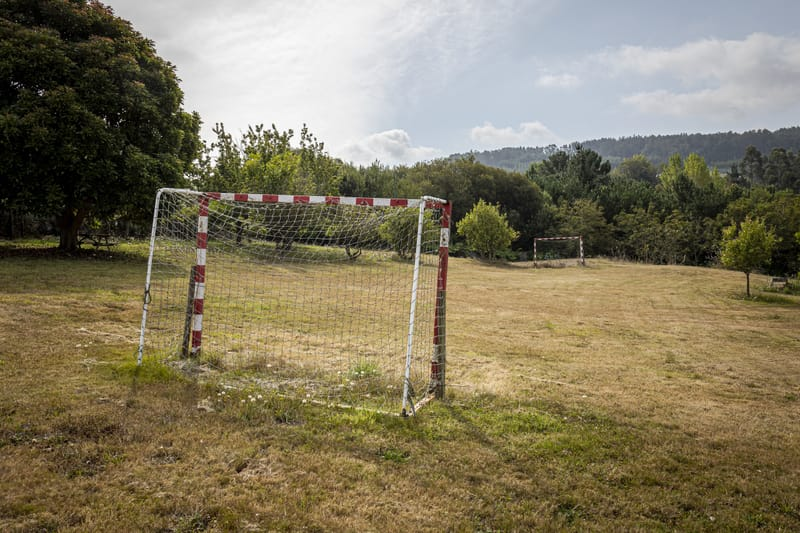
El campo de fútbol
Un campo de fútbol de hierba, con porterías y árboles alrededor, aparte de la casa.
Aforo: [aforo]
No sale en la foto del dron: está fuera del encuadre.
-
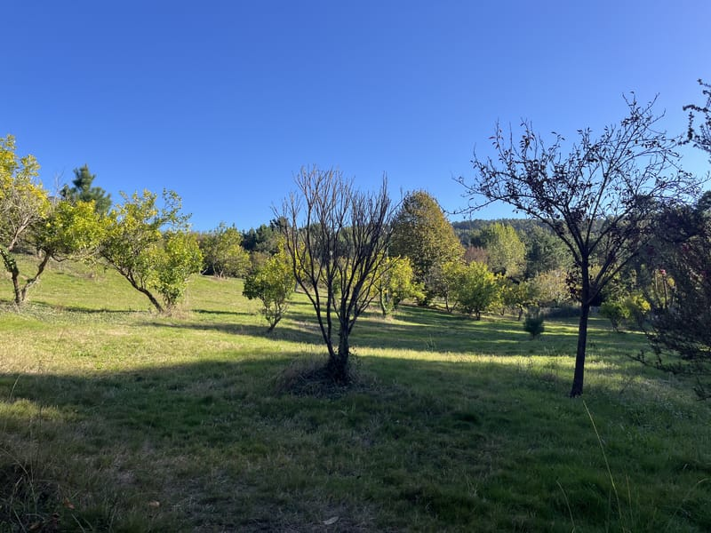
El prado de frutales
La ladera de prado con frutales en la que está la casa, entre eucaliptos y pinos, con una mesa de picnic de madera bajo un árbol grande.
Aforo: [aforo]
Queda fuera del encuadre de esta foto.
Arma tu fiesta
Tres preguntas. No se guarda nada.
Dinos qué celebráis, cuántos sois y si os quedáis a dormir, y te enseñamos qué espacios de la finca encajan.
¿Qué celebráis?
¿Cuántos sois?
¿Os quedáis a dormir?
Elige qué celebráis y cuántos sois, y te enseñamos qué espacios de la finca encajan.
Aforo, plazas y precio todavía no se saben: salen entre corchetes hasta que los confirme el dueño.
Un día en la finca
Así puede ser una fiesta de ejemplo: llegáis a mediodía, coméis fuera, jugáis un partido, veis caer la tarde, cenáis dentro y os quedáis a dormir. Mueve la hora y mira cómo cambia la luz.
-
12:00
Llegada
La casa y la escalera de entrada
Subís por la escalera de la fachada granate y ya estáis. La finca se alquila entera, así que no hay más grupos que el vuestro.
-
14:30
Comida
El merendero
Mesas de picnic de madera junto a la casa y, en el suelo, un círculo de fuego. Se come fuera, en el prado.
-
17:30
Partido
El campo de fútbol
Un campo con porterías en el prado, rodeado de frutales y árboles grandes. Para el partido de después de comer, el que sea.
-
20:30
Tarde en la terraza
La terraza grande
Barandilla, sillas de madera y el valle delante. Aquí se queda la gente cuando baja el sol.
-
23:00
Cena
La barra y el salón
La barra con la pared verde y los focos colgando. Se cena dentro, en el salón o en el comedor grande. Hasta qué hora hay música: [normas de ruido].
-
01:30
A dormir
El salón rojo
Se duerme en colchones en el suelo, no hay dormitorios con camas. Cuántos caben: [plazas].
Las horas son de ejemplo, no un horario cerrado. Las fotos de la tarde y de la noche son fotos de día teñidas: todavía no hay fotos de la finca de noche.
Cocina, comedor y vestuarios
Cocina industrial con fogones, plancha y cámara.
Fue un bar-restaurante, así que tiene lo que hace falta para dar de comer a mucha gente y para cambiarse después del partido.
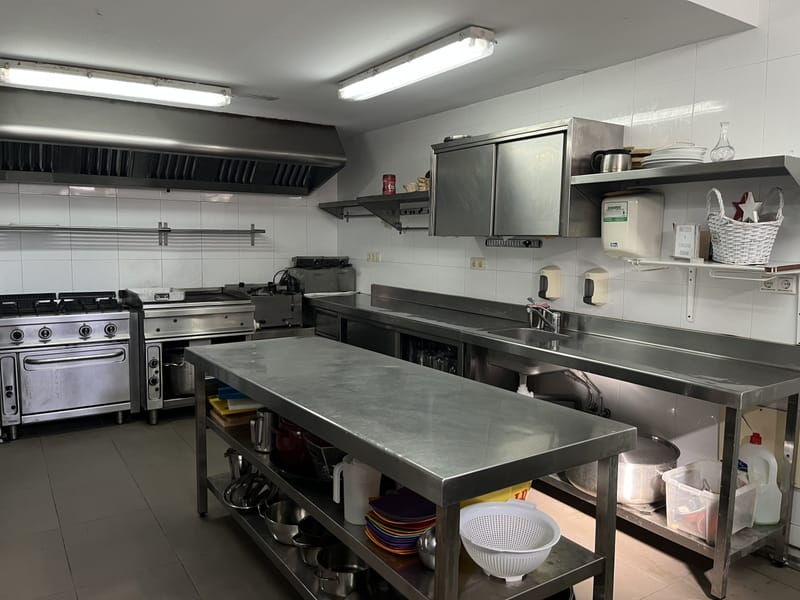
Qué incluye el alquiler
- Se ve en las fotos
- La casa entera: salón y barra, comedor, galería, cocina industrial, vestuarios con duchas y aseos, terraza, merendero y campo de fútbol.
- Menaje y vajilla
- [qué incluye]
- Mesas y sillas
- Las del comedor y el merendero. [cuántas]
- Fuego y barbacoa
- Hay un círculo de fuego en el merendero. [se puede usar]
- Limpieza
- [incluida o aparte]
- Catering
- [se puede contratar]
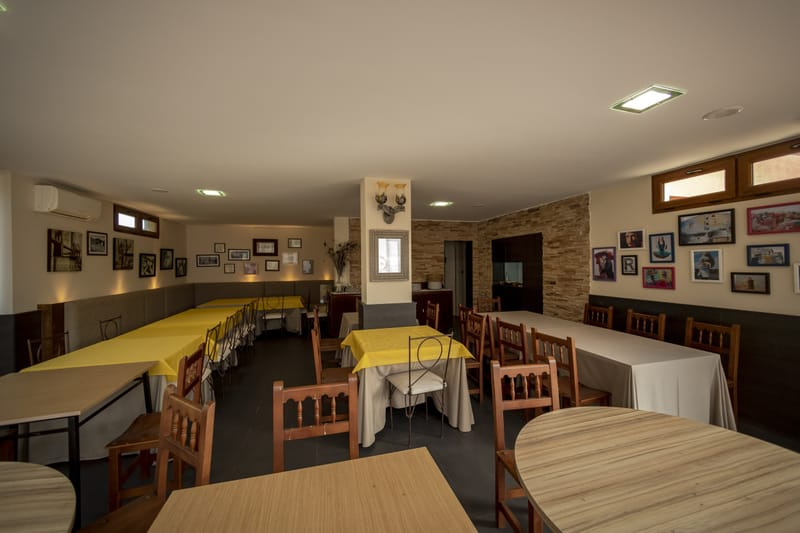
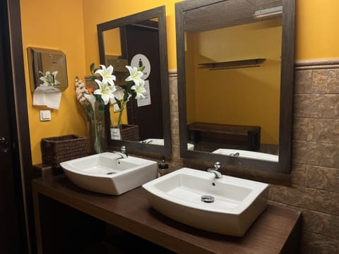
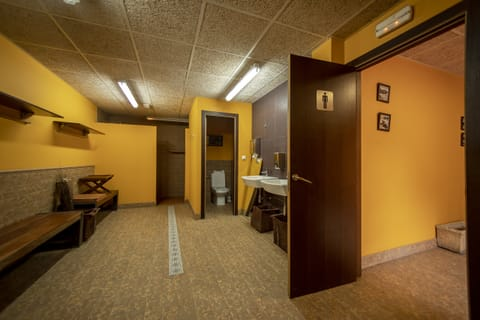
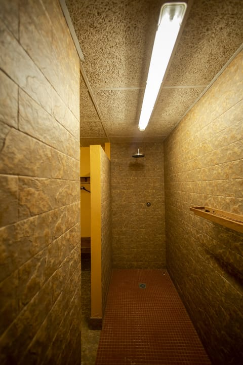
Dormir en la finca
Hoy no hay dormitorios con camas.
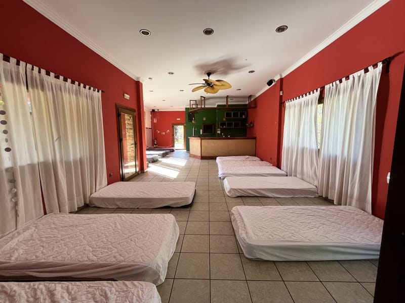
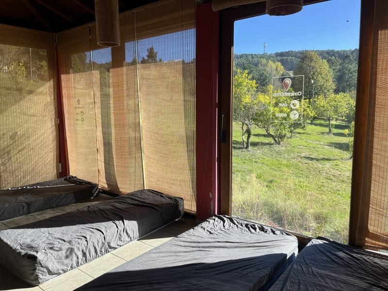
Si la fiesta sigue al día siguiente, os quedáis. Hoy se duerme en colchones en el suelo de los salones y de la galería.
- Plazas
- [plazas]
- Dónde
- Salones y galería
- En qué
- Colchones en el suelo
- Ducharse
- Duchas y aseos de los vestuarios
La noche se pide junto con la fiesta: en el calendario, marca «Nos quedamos a dormir». Ropa de cama [qué incluye].
En verano, la casa se alquila por noches para descansar: terraza, finca y la ría al fondo.
- Plazas
- [plazas]
- Dormitorios
- [dormitorios y camas]
- Temporada
- [fechas de verano]
- Registro
- [registro turístico]
Pedir fecha
Libres y ocupados de un vistazo, sin escribir a nadie.
Mira qué días están libres y pide el tuyo. Te lo confirma el dueño.
Cuántos sois
Elige el día de llegada y el de salida. Mínimo dos noches.
Simulación: no se envía ni se guarda nada, y los días ocupados son de ejemplo. Precio, aforo y plazas están por confirmar con el dueño.
Cómo llegar
[municipio]. Una ladera con prado y frutales, entre pinos y eucaliptos, con la ría [nombre de la ría] al fondo.
- Dirección
- [dirección]
- Teléfono
- [teléfono]
- [WhatsApp]
- Correo
- [correo]
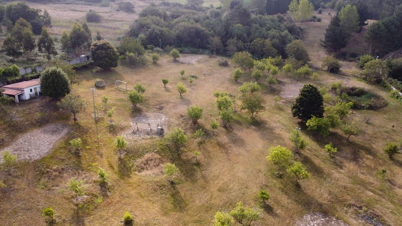
El mapa es de Google y solo se carga si lo pides.